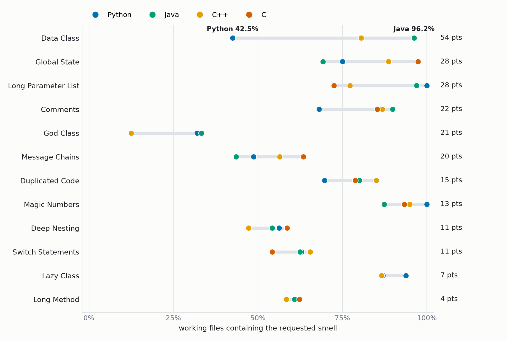

Do open-weight code models produce the code smell they are asked for, and does that depend on the language of the prompt or the programming language requested?
granite-8b-code from 27% to 93%. C and C++ trail because granite-8b-code runs past the output limit.The same 426 Python tasks asked in English, Spanish, French and Chinese, of 13 models. Every model answered every prompt in every language. Ranges are 95% intervals.
| Prompt language | Valid code | Smell produced | Lint per 100 lines, all files | Parsing files only |
|---|---|---|---|---|
| English | 96.9% 96–98 | 54.3% 51–58 | 7.3 | 5.5 |
| Spanish | 87.2% 86–88 | 49.0% 45–53 | 23.2 | 5.2 |
| French | 95.1% 94–96 | 47.5% 44–52 | 12.6 | 6.0 |
| Chinese | 97.0% 96–97 | 43.8% 40–48 | 9.6 | 6.2 |
Files that fail to parse average 88 lint violations per 100 lines, against 5.7 for files that parse, so the all-files column mostly measures how often generation broke. On parsing files the four languages are level.
The gap comes from 2 models; the other
11 are within 8 points of English in every
language. In Spanish, Granite writes the word python on its own line
instead of a fenced code block, and the extractor cannot separate the code from the
prose around it:
| Model | Prompt language | Valid as scored | Valid without requiring a fence | Replies with no fence |
|---|---|---|---|---|
| granite-3b-code | Spanish | 49.3% | 89.2% | 43% |
| granite-8b-code | Spanish | 26.8% | 93.2% | 72% |
| granite-8b-code | French | 80.3% | 93.4% | 15% |
Whether a dropped fence counts as a failure depends on whether following the requested format is part of the task. The scores on this page keep the stricter reading.
The English prompts ported to Java, C++ and C, asked of 5 models, one per family at 7B to 9B. C is asked 292 of the 426 prompts because 8 smells are defined over classes; the table compares prompts asked in all four languages.
| Programming language | Valid code | Smell produced | Mean length |
|---|---|---|---|
| Python | 97.7% 97–99 | 71.9% 66–77 | 31 lines |
| Java | 96.5% 95–97 | 72.0% 67–77 | 42 lines |
| C++ | 85.1% 84–86 | 73.9% 69–79 | 81 lines |
| C | 86.0% 85–88 | 73.9% 70–79 | 87 lines |
The C and C++ drop is one model. granite-8b-code writes valid C++
43% and C 43% of the time, against
95% in Python, and 61% of its broken
C++ and 84% of its broken C answers ran to the 2,048-token output
limit and were cut off mid-statement. The other four models
stay between 91.8 and 99.8% in every
language. Separately, starcoder2-7b never stops by itself and reaches the cap on every answer in every language, but its code comes first, so it still parses 92 to 98% of the time.
The flat average hides large differences smell by smell, and the direction is consistent: a smell is easier to produce where it is the ordinary way to write that language.

static field.Experiment 1, Python, 21 of 25 smells measured. Beside each rate is how often the same detector fires on files that asked for a different smell; the gap between them, the lift, is what the prompt caused. Data Clumps, Inappropriate Intimacy, Dead Code and Speculative Generality have a lift under 20 and are reported, not relied on.
| Targeted smell | Files | Asked for | Not asked for | Lift |
|---|---|---|---|---|
| Long Parameter List | 1,040 | 99.8% | 27.8% | +72 |
| Middle Man | 832 | 72.0% | 2.9% | +69 |
| Magic Numbers | 936 | 96.9% | 28.8% | +68 |
| Switch Statements | 936 | 56.1% | 2.3% | +54 |
| Data Class | 832 | 60.0% | 16.0% | +44 |
| Global State | 832 | 70.3% | 26.6% | +44 |
| Duplicated Code | 1,040 | 98.0% | 55.5% | +43 |
| Message Chains | 832 | 44.1% | 3.4% | +41 |
| Refused Bequest | 832 | 41.0% | 1.2% | +40 |
| Long Method | 1,040 | 63.3% | 24.6% | +39 |
| Parallel Inheritance Hierarchies | 832 | 37.0% | 0.1% | +37 |
| Deep Nesting | 936 | 37.7% | 3.7% | +34 |
| Lazy Class | 832 | 48.8% | 18.2% | +31 |
| God Class | 1,040 | 31.6% | 3.4% | +28 |
| Feature Envy | 936 | 29.4% | 3.9% | +25 |
| Comments | 728 | 30.7% | 8.9% | +22 |
| Temporary Field | 832 | 25.0% | 3.2% | +22 |
| Data Clumps weak | 936 | 21.6% | 5.5% | +16 |
| Inappropriate Intimacy weak | 936 | 8.5% | 0.1% | +8 |
| Dead Code weak | 832 | 19.9% | 12.6% | +7 |
| Speculative Generality weak | 832 | 7.6% | 7.3% | +0 |
mamba-codestral-7b substitutes a wrong token about once
in every 140 and only 6 of 20 files parse. Five causes were tested: two were
pipeline faults and were fixed, three were ruled out, leaving the published model
itself. The release notes record what was tested.| Control | What it does | Why |
|---|---|---|
| Validity | Quality and smell figures use parsing files only | A file that does not parse has no quality to measure |
| Matched prompts | Languages are compared on prompts asked in all of them | C is asked 292 of the 426 prompts |
| Lift | Each detector is also run on files that asked for another smell | A detector that fires everywhere reports a base rate; under 20 is weak |
| Smell | Why it is out of reach |
|---|---|
| Alternative Classes with Different Interfaces | needs semantic equivalence |
| Data Clumps | needs parameter identity matched across signatures and types |
| Dead Code | fires as often on code that was not asked for it; see git history |
| Feature Envy | needs to resolve which object each field access belongs to |
| Inappropriate Intimacy | needs per-class field ownership across two classes |
| Incomplete Library Class | needs the library's intent |
| Middle Man | needs to tell a delegating call from a working one |
| Parallel Inheritance Hierarchies | needs two hierarchies compared by name |
| Primitive Obsession | a judgement about domain modelling, not a count |
| Refused Bequest | needs the parent's members, usually in another file |
| Shotgun Surgery | needs change history, not a syntax tree |
| Speculative Generality | needs to know an abstraction has one user |
| Temporary Field | needs to know a field is unset on most paths |
dataset/._analysis_fullsize/
(Experiment 1) and _analysis_xlang/
(Experiment 2), one row per file in per_file.csv.python -m pipeline.make_site.